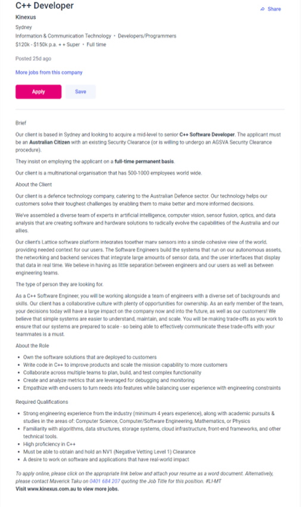

I’m an Australian residing in Japan since 2004. I have a wife and two children.
In 2003 I graduated at the Australian Institute of Applied Sciences with a diploma in Anatomy and Physiology.
In 2014, I passed the N1 (highest level) Japanese Language Proficiency Test. Those with this certification can converse in most situations in
Japanese culture to a high level.
My dream as a teenager was to be a musician. I have original music on Spotify and other streaming platforms, an album made with friends here in
Japan for runners in which all music is in 180bpm and am halfway through recording an original album with a Japanese bassist and a Chinese singer.
Click here for a PDF outlining my learning style.
I am a tactile learner, i.e. I learn by doing. This rings true for me, as I find it difficult to retain information by just listening, preferring
to actually do. This was definitely true for me when learning Japanese. I was one who would ask questions, any question, not matter how trivial to
the annoyance of my interlocutor but I believe it's best to ask rather and learn rather than the alternative. I believe that open communication, a willingness
to ask questions and being hands-on; actively working with members of a team are essential elements to successful team development.
Click here for a PDF outlining my leadership style.
I don't know how much can be read into an online quiz like this, as there were are questions that didn't really apply to me, but I think this is an
honest appraisal of my personality -> leadership style. I do at the very least try to be this kind of person. I'm not outgoing, growing up with a stutter
as a child put a stop to that, but I do try to help others be a better version of themselves. Often when playing in bands, I would take on learner players. I
strongly believe that a teacher can learn from their students' failures, "The greatest teacher, failure is." (Yoda, The Last Jedi) and successes and become better people themselves, This undoubtedly translates to
teamwork and leading a team of individuals. This is known as the Protege Effect.
Also, morally speaking, I believe in the secular humanist moral system in which "wellbeing" is the ultimate goal. This is ultimately can be construed as a selfish
moral system in that ultimately, we help others and help others be the best version of themselves in the hope that we can live in a mutually beneficial
society I believe in leading by example, not by force.
Click Here for a PDF outlining my personality test.
I don't quite agree fully with the analysis of this personality test, as although I do consider myself hardworking, when it suits me and devoted, often
the one who would be more likely to put the effort into a friendship, relationship and even a working relationship. This can be frustrating when working with
teams but I hope to grow with my team and come out the other end together as better, more team oriented people. I'm not one to is a traditionalist,
I'm one who is often the more progressive among friends, an unapologetic leftist, nor am I one to remember birthdays. I'm although not one who needs instant
gratification but do hope for recognition when it I feel it is deserved. On the other hand, I find being praised embarrassing.
I do feel that I am altruistic. Ultimately, as a secular humanist, it is beneficial to the human race to put human wellbeing at the forefront of our
minds and work together for the betterment of the human race.
Christopher Aiezza
My ePortfolio
- Student ID: s3964405
- Email: s3964405@student.rmit.edu.au
- GitHub: My GitHub Repository
- Contact: +81 903 646 9252
About Me
{kind=link}
Interest in IT
My interest in IT began when I first had contact with a computer back when I was about 11 or 12 years old. My mum got a cheap computer from Cash Converters, one with a cassette deck and it came with a book on coding. If memory serves correct, I believe this is what I had. I remember copying the code to write Black Jack. I very much regret not continuing with that but am looking to make amends now at RMIT. My experience in IT is limited to trial and error, but in my family and friends circle, I’m usually the one people go to for tech help. If anything, I’m able to use Google to solve most tech problems. My hope is to learn to go further and solve programming issues as well.
Why I Chose RMIT
I chose RMIT because they provide an 100% online program and were highly recommended when I posted a question on Reddit about studying IT online
as a mature student. Despite my relatively older age, I strongly believe that age is just a number and I can learn how to program, learn how to build an app,
learn how to do things I don’t even know I want to learn how to do at RMIT.
My expectation from studying at RMIT are to learn the ins and outs of IT including programming, troubleshooting, working in groups and other facets
of working in the IT industry. As someone who will graduate in my mid-40s, my hope is to despite my age be able to hit the ground running and be at
the very least a serviceable contributor and eventually excel.
Ideal Job
This position is for a C++ Software Engineer that will be able to work with and learn from peers with a possibility of future opportunities. It
is a job that requires a high level of maturity and attention to detail, as it is a position in defence.
As someone who is a pacifist while also a realist, working in defence and helping to ensure that clients make “better and more informed” decisions
is an exciting prospect. As someone who already lives overseas and dreamt of doing so from a very young age, while I understand that this job is
situated in Australia, the idea that organisation being international implies that there may be possibilities of future positions abroad. That is
incredibly exciting.
The job requires exemplary proficiency in C++ and a strong team ethic and team working skills. Excellent communication skills to meet the demands
of clients is at the forefront of the company’s needs.
Currently, I have no knowledge of C++ but do love working in a team and collaborating in teams.
To meet the demands of this position, it is going to take me to first, complete the degree in IT. Then, further studies in the disciplines outlined
in the job advert, Computer Science and physics among them. I have an interest in physics, so earning a degree in physics as a post-grad is also
a compelling prospect. I don’t know how much C++ is taught in the Bachelor of IT degree, but if it’s minimal, further study in this area will be
conducted post-graduation.

C++ Software Engineer? /
Job no longer listed.
Project Idea
Here I present and idea for a simple monitor placed on the rear windshield of a car to display vital information to other drivers. To circumvent having
to keep it constantly or regularly connected to an energy source or charger, a kindle type always on display could be advantageous. It can be installed
either using suction cups like traditional signs or a holder attached with double-sided tape. The monitor will be managed by an app to allow the user to
choose what image to be displayed and including a custom image editor with profanity filters to ensure illicit images and messages cannot be displayed.
Any new parent has purchased and attached a “Baby on Board” sign. This seems like just a message to other drivers to be careful around them to ensure the
safety of the “baby on board” but this also has a secondary, perhaps even more vital purpose, to notify emergency services in case of an accident that a
baby is on board. This is a communication device. Without it, emergency services would likely have no idea that an infant is in the vicinity and if the
parents are deceased with the infant injured and/or unconscious the unimaginable becomes an infinitely higher possibility.
Also consider indicators. Why do we have them? They convey to fellow motorists that one wants to turn right or left and when hazard lights are used, to
notify other drivers to be careful around them. In some countries it is customary to use hazard lights as a “thank you” for allowing them to cut in. This
is again, communication. Communication is key. Haven’t we all been in situations where miscommunication has led to arguments that could easily have been
resolved simply with better communication? Being on the road is no different. If anything, the simple tools we have at our disposal in our vehicles coupled
with the anonymity that comes with being in an enclosed and isolated space travelling at high speeds, lends itself to lack of and miscommunication.
Back to the monitor. “Baby on Board” signs convey only two messages, the aforementioned ones above. Perhaps a driver has other precious cargo and needs to
drive extra carefully. That can be very frustrating to other drivers and perhaps cause road rage incidents or other forms of traffic incidents. According to
Geico.com, road rage accidents are caused by aggressive driving acts such as tailgating, weaving and speeding. Such aggressive driving contributed to above
50% of fatal accidents in the United States.
What is Road Rage? Definition & Causes | GEICO Living. It isn’t difficult to imagine that adequate communication
could have prevented a healthy percentage of these incidents.
Perhaps a driver is incapacitated for whatever reason and needs assistance. Voice activation of the device is essential for this to work. A voice command
like “Hey, (device name) alert drivers I need assistance” could be displayed so drivers can call emergency services.
Perhaps a driver is elderly and needs extra time and space. In Japan, elderly drivers are required to display a “clover” sign to inform other drives that
they may have impaired reaction times and need to give the driver extra distance between cars. Something like this could be a boon for Australian elderly
drivers. Someone who doesn’t know how to change a tyre could also benefit from such a device.
I know myself that there were times I wish I had a way to communicate safely to other drivers that they need to give me a wide birth.
That’s where the rear windshield display monitor comes in. Attach it to the rear windshield, connect to the dedicated app, choose a message to display and
off you go.
The "product" will require: (Realistic Project expectations in BOLD)
- A Kindle® type always on display although an LED display could well be used in prototypes. Projection mapping could also be an idea in future iterations of the product.
- A dedicated app. This is the main thing I hope to complete by the end of this project. I have no delusions of my current capabilities but I would be ecstatic if I were able to complete this whole project. The app is the initial goal, the first step.
- Bluetooth® connectivity.
- Raspberry Pi (in prototypes)
- Voice activation to allow for hands-free control of device.
- A battery pack or a way of connecting device to the cars electronic system.
The skills required to bring the rear windshield monitor into fruition would be, (in a group setting)
- App development knowledge. Without this, the monitor would have to be manipulated from the device itself. This would harm sales.
- Graphic design skills. To avoid paying third parties for e.g., “Baby on Board” images for the display, a graphic designer contracted to design various images for the monitor to display is essential.
- Programming skills will be required to connect a Raspberry Pi to the app and to have the app available to customers only upon purchase of the monitor.
- For future iterations; projection mapping programming skills.
Real World Expectations • Hopes for the Product
If this product is successful, drivers will have added peace of mind that they can readily communicate with other drivers and even help aid in keeping our roads safer for everyone. The devices would be available in all auto retailers, on the product website and internet shopping sites such as Amazon®. The app will be available for download free of charge.
References
Effectiviology.com. (2019). The Protégé Effect: How You Can Learn by Teaching Others – Effectiviology. [online]
Available at: https://effectiviology.com/protege-effect-learn-by-teaching/.
StarWars.com. (2020). Teaching with Star Wars: Learning from Failure in Star Wars: The Last Jedi. [online]
Available at: https://www.starwars.com/news/teaching-with-star-wars-learning-from-failure-in-star-wars-the-last-jedi [Accessed 17 Jun. 2022].
Fonville, J. (2019). How To Avoid Road... [online] GEICO Living. Available at:
https://www.geico.com/living/driving/auto/car-safety-insurance/7-ways-to-avoid-road-rage/.